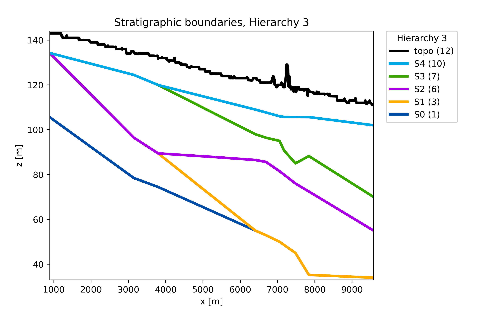
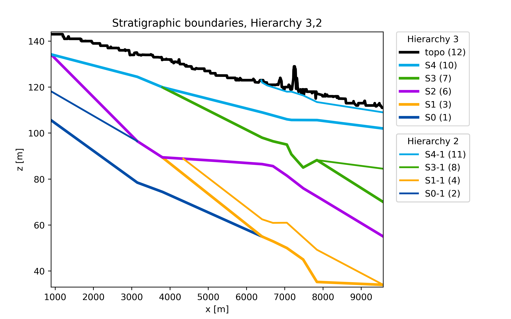
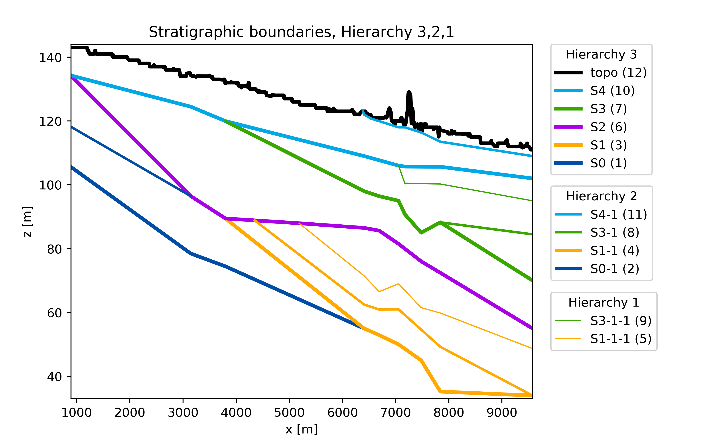
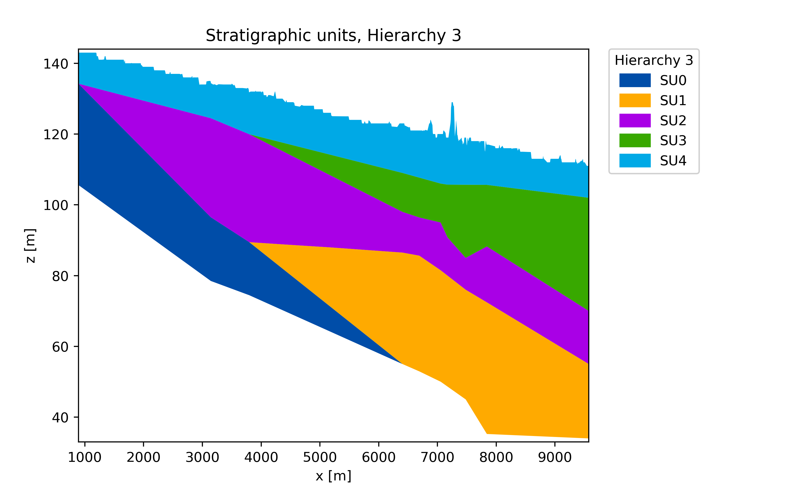
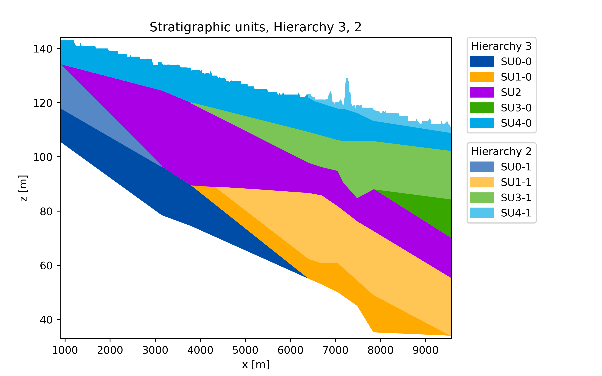
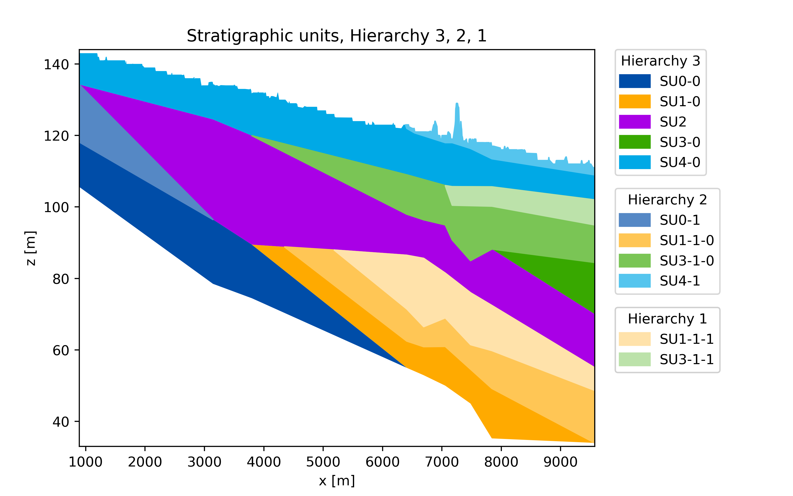

Purpose¶
The purpose of the hiegeo Python module is to propose a novel approach to geological modeling, that takes into account for the hierarchy and the chronological order of the geological structures to be represented.
See the manuscript hiegeo: a novel Python module to model stratigraphic alluvial architectures, constrained by stratigraphic hierarchy and relative chronology by Chiara Zuffetti, Alessandro Comunian, Riccardo Bersezio, and Philippe Renard for more details.
Hereinafter you can see one of the possible output provided by hiegeo, for example a representation of the geology in terms of stratigraphic boundaries (SBs) including only the 3rd level of hierarchy, the 3rd and the 2nd, and 3rd, 2nd and 1st:
  {kind=link}
{kind=link}
{kind=link}
The same representation at different hierarchical levels can be obtained in terms of Stratigraphic Units (SUs):
  {kind=link}
{kind=link}
{kind=link}
In addition, you can also have a representation of the geological hierarchy as a tree structure: